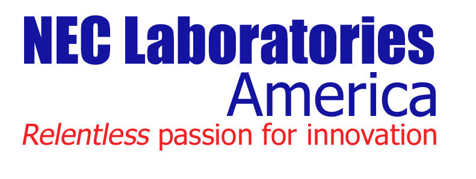
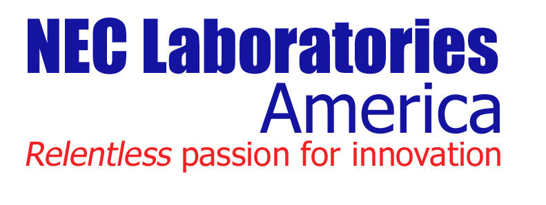

Abstract
Stereo matching and flow estimation are two essential tasks for scene understanding, spatially in 3D and temporally in motion.
Existing approaches have been focused on the unsupervised setting due to the limited resource to obtain the large-scale ground truth data.
To construct a self-learnable objective, co-related tasks are often linked together to form a joint framework.
However, the prior work usually utilizes independent networks for each task, thus not allowing to learn shared feature representations across models.
In this paper, we propose a single and principled network to jointly learn spatiotemporal correspondence for stereo matching and flow estimation, with a newly designed geometric connection as the unsupervised signal for temporally adjacent stereo pairs.
We show that our method performs favorably against several state-of-the-art baselines for both unsupervised depth and flow estimation on the KITTI benchmark dataset.
 
